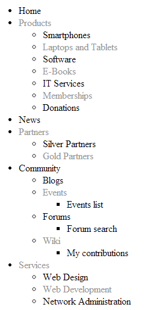

BasicUniView
The BasicUniView control displays items from a data source based on specified templates. Provides support for displaying data in a hierarchical structure from grouped data sources.
Grouped data sources
Grouped data sources are represented by the GroupedDataSource class. A grouped data source takes a standard data source, such as a DataSet, and categorizes the data items into hierarchy levels according to the values of specified columns.
You can use the BasicUniView with any bindable data source – not only Kentico data and objects.
Inherits from: UniView
Web part equivalent (portal engine): Basic universal viewer
Tip: If you want to display pages from Kentico, you can use the CMSUniView control, which has built-in support for loading Kentico pages.
Getting started
The following is a step-by-step tutorial that shows how to display all CMS.MenuItem pages from the sample Corporate Site in a hierarchical structure using the BasicUniView control:
Create a new Web form in your web project.
Drag the BasicUniView control from the toolbox onto the form.
Add the following code marked by the BasicUniView templates comments between the <cms:BasicUniView> tags:
<cms:BasicUniView ID="BasicUniView1"runat="server"><%-- BasicUniView templates -------------------------------------------------------------- --%><ItemTemplate><li><%# HTMLHelper.HTMLEncode(Convert.ToString(Eval("NodeName"))) %><cms:SubLevelPlaceHolder runat="server"ID="plcSub"/></li></ItemTemplate><AlternatingItemTemplate><li><font color="#999999"><%# HTMLHelper.HTMLEncode(Convert.ToString(Eval("NodeName"))) %></font><cms:SubLevelPlaceHolder runat="server"ID="plcSub"/></li></AlternatingItemTemplate><HeaderTemplate><ul></HeaderTemplate><FooterTemplate></ul></FooterTemplate><%-- BasicUniView templates -------------------------------------------------------------- --%></cms:BasicUniView>This sets the templates used when displaying the menu items. The control uses inline code to insert the values of items into the template. This process is repeated for all records in the data source.
The SubLevelPlaceHolder specifies where exactly the control inserts child levels in the output code. For items that have descendants in the hierarchy, the control renders the child level instead of the placeholder (including the header and footer template for the new level).
Switch to the web form's code behind and add the following references:
usingSystem.Data;usingCMS.DocumentEngine;usingCMS.Helpers;usingCMS.Base;Add the following code the Page_Load method:
// Creates a DataSet containing all menu item pages in the systemDataSet ds = DocumentHelper.GetDocuments("CMS.MenuItem").Path("/", PathTypeEnum.Children).OrderBy("NodeLevel, NodeOrder");// Checks that the DataSet isn't emptyif(!DataHelper.DataSourceIsEmpty(ds)){// Creates a GroupedDataSource from the ds DataSetGroupedDataSource gpd =newGroupedDataSource(ds,"NodeParentID","NodeLevel");// Specifies the column that the data uses as an identifier (to determine parent-child relationships)this.BasicUniView1.RelationColumnID ="NodeID";// Binds the DataSet to the BasicUniView controlthis.BasicUniView1.DataSource = gpd;this.BasicUniView1.DataBind();}This code reads pages from the database, saves them in a DataSet and then groups them according to the NodeID of their parent page and determines their level in the hierarchy according to their NodeLevel. The grouped data source is then assigned to the BasicUniView control.
Save the changes to the web form and its code behind file.
Right-click the web form in the Solution explorer and select View in Browser.
The resulting page displays a hierarchical list of pages.

Configuration
You can set the following properties for the BasicUniView control:
|
Property name |
Description |
Sample value |
|
AlternatingRange |
Indicates how often the AlternatingItemTemplate should be used. (Inherited from UniView) |
|
|
AlternatingStartPosition |
Indicates the item number from which the AlternatingItemTemplate should start being used. (Inherited from UniView) |
|
|
DataBindByDefault |
Indicates whether the control automatically performs data binding during the Init event. |
|
|
DataSource |
The object from which the list of data items is retrieved. |
|
|
HideControlForZeroRows |
Indicates whether the control should be hidden when no data is loaded. The default value is False. |
|
|
HideHeaderAndFooterForSingleItem |
If enabled, the BasicUniView does not render the content of the HeaderTemplate and FooterTemplate for levels that only contain a single item. (Inherited from UniView) |
|
|
HierarchicalDisplayMode |
Sets the hierarchical display mode. Inner generates sub-levels inside the level above, Separate generates sub-levels outside of the upper levels. (Inherited from UniView) |
"Inner" |
|
OuterData |
Data generated in the HeaderTemplate and FooterTemplate. (Inherited from UniView) |
|
|
PagerDataItem |
Gets or sets the pager data item object. (Inherited from UniView) |
|
|
PagerForceNumberOfResults |
If set, the DataSet containing paged items is not modified by the pager, but the pager itself behaves as if the amount of paged items were identical to this value. The value must be set to -1 for the property to be disabled. (Inherited from UniView) |
|
|
RelatedData |
Custom data connected to the object. |
|
|
RelationColumnID |
Specifies the name of the column that the source data uses as an identifier (to determine parent-child relationships). |
"NodeID" |
|
SelectedItemColumnName |
The name of the column that should be used for to find out which item is currently selected. (Inherited from UniView) |
"DocumentID" |
|
SelectedItemValue |
The item whose column specified by the SelectedItemColumn property matches the value of this property will be designated as the currently selected item. Typically, you will need to insert a Macro expression in order to dynamically retrieve the appropriate value from the current context. (Inherited from UniView) |
"{%currentpageinfo.documentid%}" |
|
Transformations |
Allows you to assign a HierarchicalTransformations object representing a hierarchical transformation. The BasicUniView renders the source data according to the hierarchical transformation (instead of the ItemTemplates). Note: To use a hierarchical transformation, you need to set the Transformations property before calling the BasicUniView's DataBind method. (Inherited from UniView) |
|
|
UseNearestItemForHeaderAndFooter |
Indicates whether the control provides data to the item templates (or transformations) that display the header and footer content. You can work with the data inside the code of the templates.
The control ignores this property if the OuterData property is set. (Inherited from UniView) |
|
|
ZeroRowsText |
Text shown if no records are found. This text is not visible when the control is hidden by the HideControlForZeroRows property. |
"No records found." |
Appearance and styling
You can use two different approaches to define the output format of the BasicUniView control:
Item templates (inherited from UniView)
A hierarchical transformation assigned through the Transformations property in the API (see UniView - Displaying data using hierarchical transformations)
You can define the following templates:
|
Template name |
Description |
Sample value |
|
AlternatingItemTemplate |
Template used for alternating items. |
|
|
FirstItemTemplate |
Template for the first item on every level in the hierarchy. Only applied to levels that contain more than one item. |
|
|
FooterTemplate |
Template rendered at the end of every level (after the last item on the level). Can be used to close encapsulating elements from the Header Template. |
|
|
HeaderTemplate |
Template rendered at the beginning of every level (before the first item on the level). Allows you to visually separate or style individual levels. |
|
|
ItemTemplate |
Template used for all standard items, that are not covered by a specialized template (e.g. alternating items, first items) . |
|
|
LastItemTemplate |
Template for the last item on every level in the hierarchy. Only applied to levels that contain more than one item. |
|
|
SeparatorTemplate |
Template rendered between items on the same level. The UniView does not place the separator between items on different hierarchy levels (i.e. between a parent item and its child). |
|
|
SingleItemTemplate |
Template applied in cases where there is only one item on a level in the hierarchy. |
Setting the location of sublevels
When displaying hierarchical data, you can add a placeholder that specifies the position of sublevels inside the code of item templates:
<cms:SubLevelPlaceHolder runat="server" ID="plcSub" />For items that have descendants in the hierarchy, the placeholder is replaced by the child level under the given item (including the header and footer for the new level). If you do not add the sublevel placeholder, the system automatically renders child levels after the code of parent items.
You can add the placeholder into any type of item template (Item, AlternatingItem, FirstItem, LastItem, SingleItem).
Note: To use the sublevel placeholder, the HierarchicalDisplayMode property of the control must be set to Inner (this is the default state).